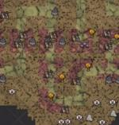

| Military | |
|  |
|
| Abundant | |
| Occasional | |
| Rare | |
The Military biome is found in the Ruins. The entrance to this biome always has a single island with a spiral pattern of RunicTurfs, at the center of which is a single Ancient Statue. This biome is very similar to the Sacred biome, but can readily be identified by its turf, which is mostly Cave Rock Turf. Another difference is that while this area also has numerous Broken Clockworks, they are spread out across the entire biome. Likewise the various Damaged Clockworks are a constant threat.
Numerous Ancient Statues and Nightmare Lights can be found in this area, and this is also the only area where Dangling Depth Dwellers can be found outside the Labyrinth. Flintless Boulders can be found in this biome.
This is one of the only two biomes where the Ancient Pseudoscience Stations can be found.
| Biomes | |
| Surface | Chess • Grasslands • Graveyard • Forest • Marsh • Mosaic • Ocean • Rockyland • Savanna • Desert • Deciduous Forest |
| Caves | Mushtree Forest • Rocky Plains • Stalagmite Biomes • Sunken Forest • Cave Swamps |
| Ruins | Abyss • Labyrinth • Military • Sacred • Village • Wilds |
| Related | Bridges • Map • Road (Trail) • Turfs |